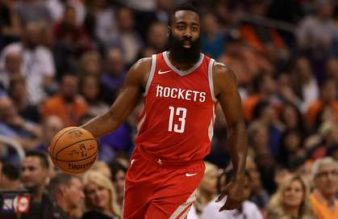

WIZARDS (14-12) 112; CLIPPERS (9-15) 113
Los Angeles snapped a four-game losing streak with a dramatic late win. Lou Williams (35/2/8) was the star of the show as he exploded off the bench and hit the decisive go-ahead three-pointer with just 1.2 seconds left. Danilo Gallinari (25/3/2) also gave the team a huge spark in his return from injury. Washington got big performances from Otto Porter Jr. (27/11/5), Bradley Beal (25/2/3) and Mike Scott (22/8/2) but it didn't prove to be enough as they were beaten in the final seconds. Goran Dragic (20/7/3) came out of his recent slump to help Miami get back to winning ways after two straight losses. Tyler Johnson (20/4/1) came up big off the bench and James Johnson (17/7/3) had a strong all-around game. Brooklyn had six players in double figures but they still produced a low-scoring output in Mexico City. Rondae Hollis-Jefferson (18/8/0) was the team's leading scorer on the night. HEAT (12-13) 101; NETS (10-15) 89